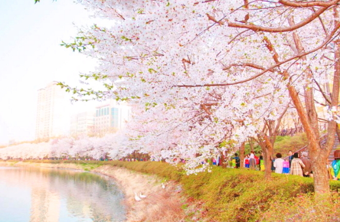

봄
기상학적으로는 3월 중순~5월 25일경이다. 그러나 5월이 여름인 지역도 존재하며, 기후변화로 인해 평균기온이 상당히 오르면서 5월은 더이상 봄이라 보기 힘든 지경까지 오게 되었다. 5월 중순만 되어도 봄이랑은 상당히 거리가 있으며, 5월 하순이 되면 사실상 초여름 날씨를 보인다. 서울의 봄은 남부 지방보다는 늦지만 열섬으로 기온이 빠르게 오르다보니 수도권 외곽, 강원 영서, 충북 내륙보다는 빨리 시작하여 실질적인 봄은 3월 중순부터 5월 중순까지라고 볼 수 있다. 그러나 소만 즈음 본격적으로 전국보다 기온이 높아져 봄이 끝나는 시기(여름 시작 시기)는 대구보다 조금 늦은 정도에 불과하며 웬만한 남부 지방과 비슷하고 특히 높은 최저기온으로 인해 전남, 경남 내륙보다도 빠르다. 수도권 외곽이나 경북 북부, 춘천시, 원주시, 충주시 등 기준으로는 3월 15~20일 정도에 시작해 5월 하순까지 이어지고, 청주시를 제외한 충북 대부분과 춘천과 원주를 제외한 강원 영서 지역은 3월 25일경에 시작이나 강원내륙의 경우 꽃샘추위가 심하고 3월 눈이 자주 내려 늦으면 4월 상순에 시작하기도 하고 6월 상순까지 이어진다.
